هذا العلامة ديال الخطر. -كتعلم على منعرج خطير على ليسر . و ليس عدت منعرجات. - الخطر خارج التجمع السكني كيكون على بعد 150 متر . و لكن العلامة التكميلية فيها 100 كلم في الساعة. يعني الخطر كيتواجد على بعد 100 متر . و ليس على طول. يعني الجواب الصحيح هو 2.
السؤال 2
الجواب الصحيح: 2
هذا العلامة ديال المنع. كتعلم على انه ممنوع المرور على ليمن على جميع انواع العربات دات محرك.
السؤال 3
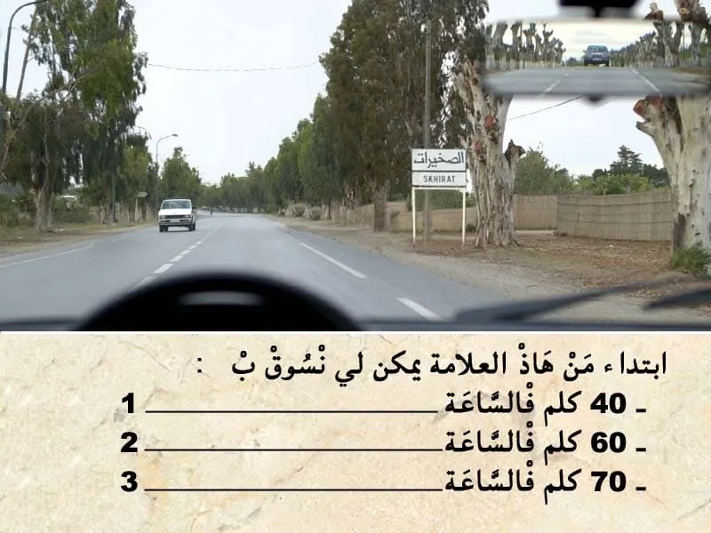
الجواب الصحيح: 1 و 2
هذا العلامة ديال الإرشاد. كتضم كتابة يعني اسم الوجهة "التجمع السكني " . عدم وجود ارقام لي كتعلم على المسافة لي مزال ليا باش نوصل . كيعني انني غادي ندخل لتجمع سكني. - داخل التجمع السكني السرعة كتصبح محدودة في 60 كلم في الساعة . و بالتالي ما يمكنش لي نمشي بسرعة أكبر من 60 كلم في الساعة.
السؤال 4
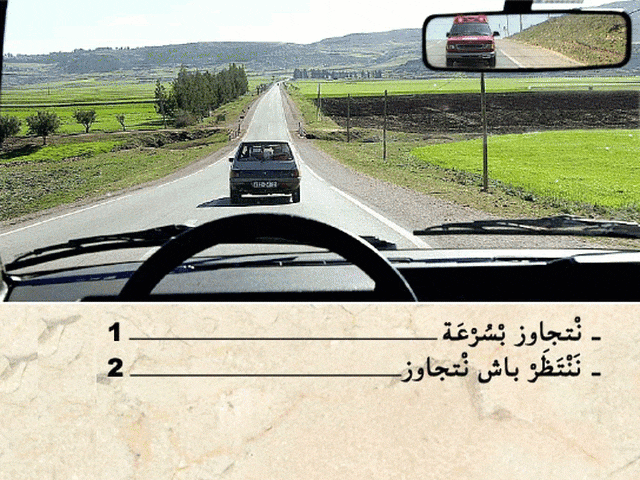
الجواب الصحيح: 2
هذا العربة لي في الخلف ديال هي عربة دات الأولوية .مشغلة ضوء الاستعجال . و بالتالي واجب عليا نعطيها حق الأسبقية ، تجاوز هي الأولى.
السؤال 5
الجواب الصحيح: 2
يجب أن توضع كل مركبة في حالة وقوف أو توقف ولو لوقت قصير بكيفية لا تشكل خطرا على مستعملي الطريق.
يعتبر الوقوف والتوقف خطيرين خاصة عندما تكون الرؤية غير كافية في أو بالقرب من :
🚫 ملتقيات الطرق؛ 2️⃣ عن 5 أمتار من ملتقى طرق في حالة عدم وجود أية علامة تشوير طرقي.
السؤال 6
الجواب الصحيح: 1 و 4
هذا العلامة . هي علامة ديال الخطر على بعد 150 متر. - كتعلم على ملتقى الطرق كروازمة . في هذا الحالة حق الأسبقية للي جاي من ليمن. و بالتالي الجواب الصحيح هو رقم 1 و 4. غير للي جاي من ليمن فقط.
السؤال 7
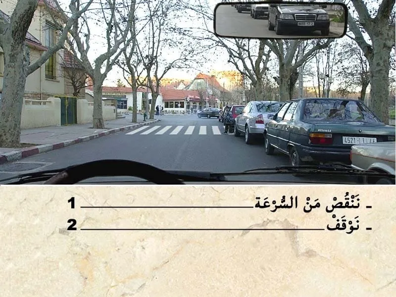
الجواب الصحيح: 2
من الواجب عليا نوقف و نعطي حق الأسبقية لهذا الراجلين.
السؤال 8
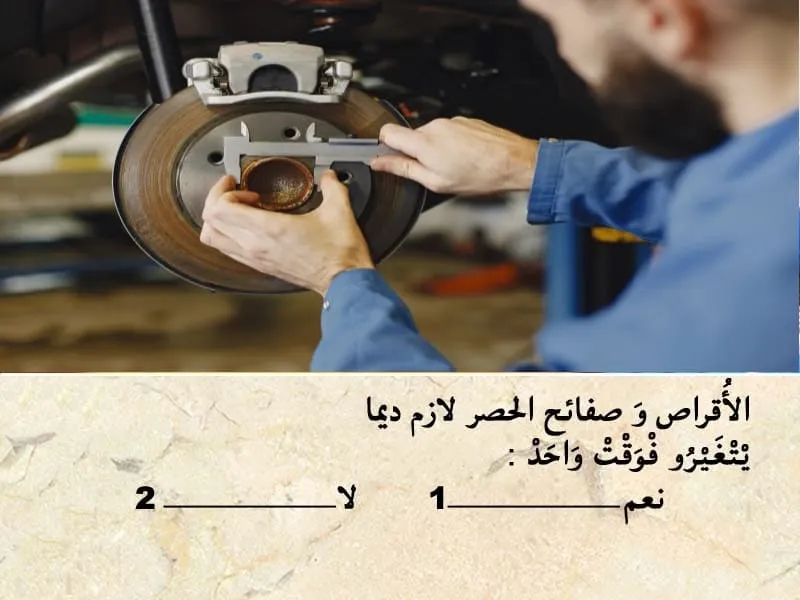
الجواب الصحيح: 2
الاقراص و صفائح الحصر من الواجب المراقبة ديالهم و تغيرهم في حالة تعرضوا التأكل . الصفائح كيتم التآكل ديالهم بسرعة. على عكس الاقراص كيصبروا مدة أطول . و بالتالي كنغيروا غير لي ما بقاش صالح فيهم
السؤال 9
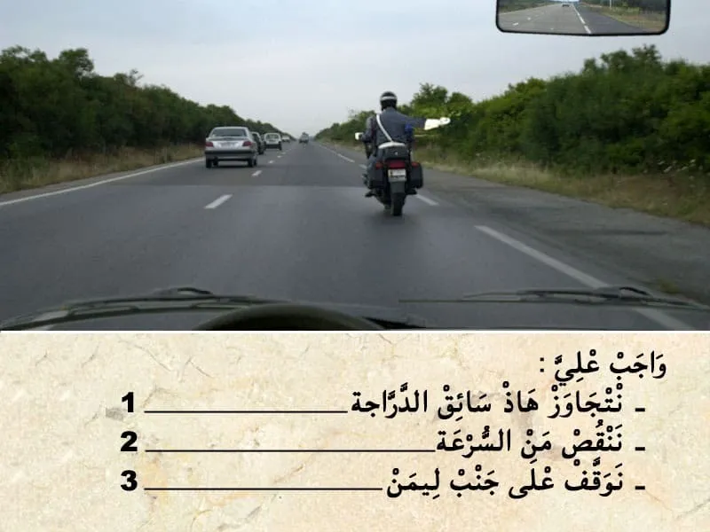
الجواب الصحيح: 2
الإشارة ديال رجل الأمن كتختلف حسب شكل اليد. - في هذا الحالة الدركي كيشير بيده مفتوحة. كيعلمني بلي واجب عليا ننقص من السرعة.
السؤال 10
الجواب الصحيح: 1
من بين أسباب وقوع الحوادث في ملتقيات الطرق هو عدم احترام حق الأسبقية.
السؤال 11
الجواب الصحيح: 2 و 4
في هذا الحالة كاين خطر ديال الراجيلين و الرماة في جنب الطريق. - خاصني نقص من السرعة و ننحاز ليسر .
السؤال 12
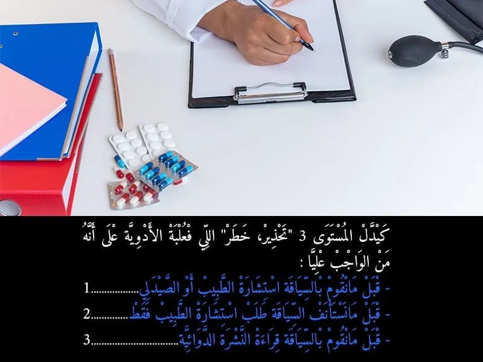
الجواب الصحيح: 2
في علبة الادوية كيدل المستويات على نوع الخط : - كيدل المستوى 1 على انني قبل ما نقوم بالسياقة واجب عليا نقوم بقراءة النشرة الدوائية. - كيدل المستوى 2 على انه قبل ما نقوم بالسياقة من الواجب عليا نستشر مع الطبيب او الصيدلي . باش نعرف واش يمكن لي نسوق الا خديث الدواء ولا لا. - كيدل المستوى 3 على انه قبل ما نستأنف السياقة ,من الواجب عليا نستشر مع الطبيب فقط . باش نعرف واش يمكن لي نسوق الا خديث الدواء ولا لا. يعني المستوى 3 فقط الطبيب هو لي يمكن ليه يعطيك الاذن باش تسوق.
السؤال 13
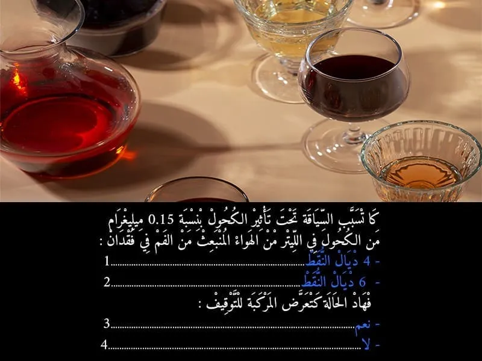
الجواب الصحيح: 2 و 3
السياقة تحت تأثير الكحول كتعتبر جنحة الا تجاوز نسبة الكحول في الهواء لي خارج من الفم 0.10 غ في الليتر. 🪫و كيتم خصم 6 نقاط . 🚫و يتم إقاف المركبة.
السؤال 14
الجواب الصحيح: 1
من الواجب عليا نوقف و نعطي حق الأسبقية لهذا الراجلين.
السؤال 15
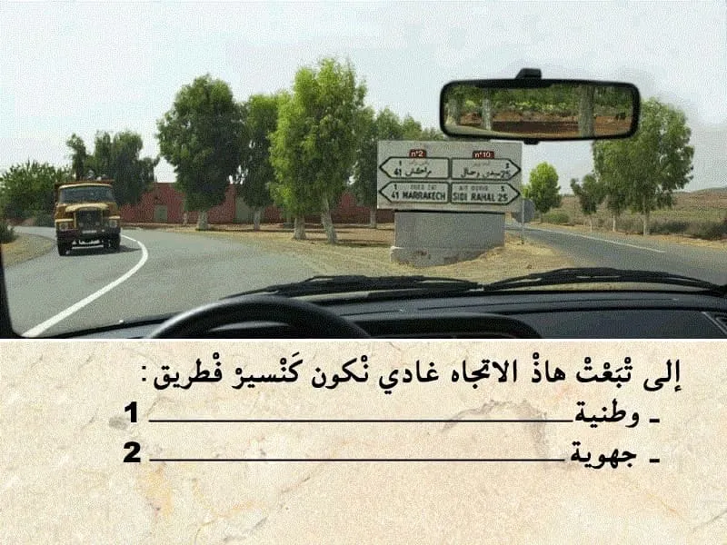
الجواب الصحيح: 1
هذا التشوير الطريقي فيه علامة ديال الإرشاد. الارقام باللون الاحمر كتعلم على انني غادي ناخط طريق وطنية .
السؤال 16
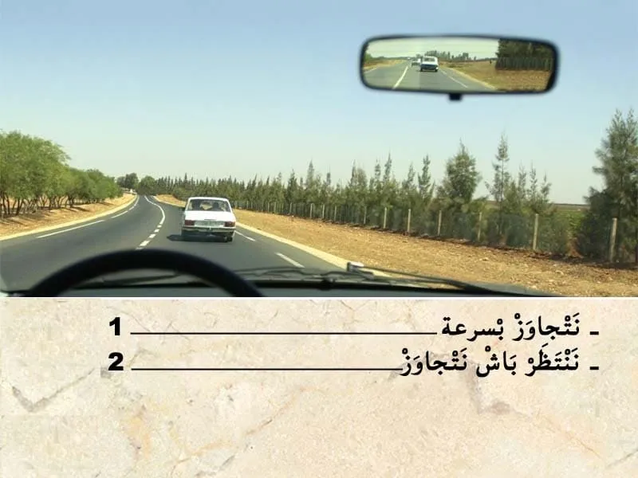
الجواب الصحيح: 2
قبل التجاوز . واجب عليا نراقب، تم نبه، تم ننحاز. في هذا الحالة الطريق خاوية وراية ما كاينش حتى شي حد جاي وراية و اعلم بلي غادي يتجاوز . ⛔ الخط لي وسط الطريق غادي يصبح متاصل و بالتالي ما بقاش عندي الحق نتجاوز.
السؤال 17
الجواب الصحيح: 1
هذا العلامة ديال الإرشاد. كتعلم على مدخل لطريق سيار. يعني ابتدأ من العلامة غادي ندخل لطريق سيار.
السؤال 18
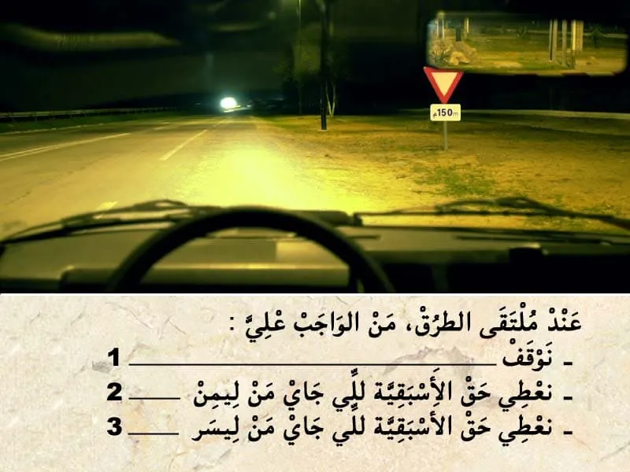
الجواب الصحيح: 2 و 3
هذا العلامة ديال اعطاء حق الأسبقية. كتعلم بلي واجب عليا نعطي حق الأسبقية في هذا ملتقى الطرق . ✏️ و بالتالي واجب عليا نعطي حق الأسبقية للي جاي من جهت ليمن . ✏️و للي جاي من جهت ليسر . و حتى للي جاي في الإتجاه المعاكس في حالة كنت غادي ندور على ليسر. - ملتقى الطرق على بعد 150 متر . و حيت ما عنديش علامة تكميلية ديال قف .يعني ما واجبش عليا نوقف .
السؤال 19
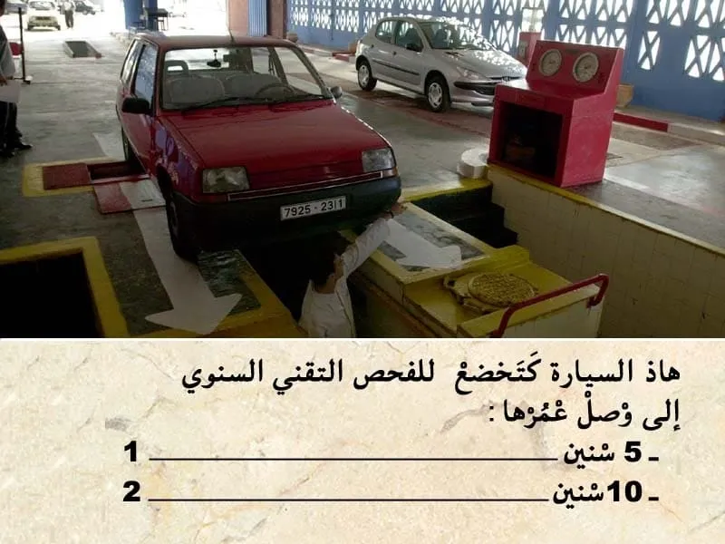
الجواب الصحيح: 1
المركبات الخاصة كيتم تجديد المراقبة التقنية كل سنة . و المراقبة التقنية الأولى كتكون قبل متم 5سنوات من تاريخ أول شروع في الاستخدام
السؤال 20
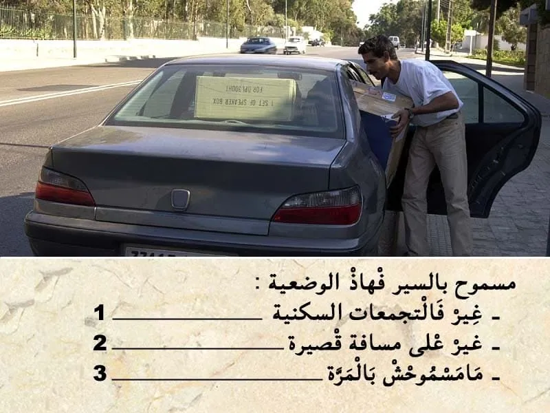
الجواب الصحيح: 3
هذا الوضعية كتحجب الرؤية للخلف من خلال المرآة الداخلية العاكسة. و بالتالي كتعتبر مخالفة .
السؤال 21
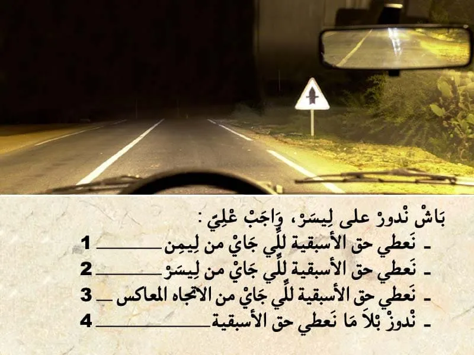
الجواب الصحيح: 3
هذا العلامة ديال خطركتعلم على : - خطر ملتقى طرق على بعد 150 متر.(خارج التجمع السكني) - طريق كبيرة في صغيرة .يعني انا لي عندي حق الأسبقية في هذا ملتقى الطرق. - في هذا الحالة كنعطي حق الأسبقية فقط للي جاي من الإتجاه المعاكس ،الا كنت غادي ندور على ليسر. - حيت كاين خطر ،واجب عليا ننقص من السرعة.
السؤال 22
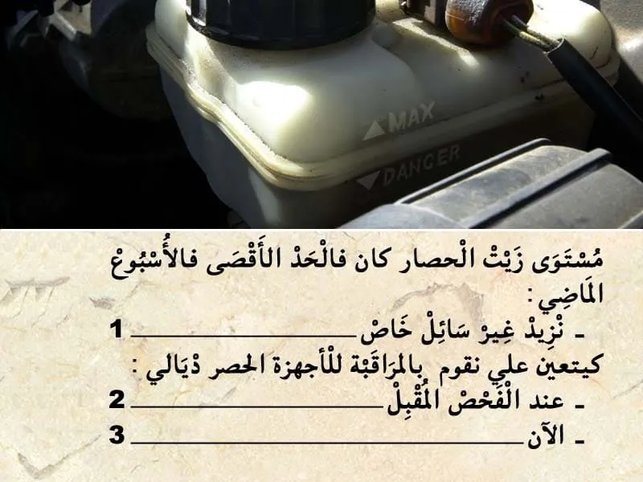
الجواب الصحيح: 3
مستوى زيت الحصار كان في الحد الأقصى في الأسبوع الماضي و دبا قريب للحد الأدنى. يعني كاين مشكل في جهاز الحصار . و بالتالي كيتوجب عليا نقوم بالمراقبة لأجهزة الحصر ديالي الآن.
السؤال 23
الجواب الصحيح: 3
هذا العلامة ديال المنع كتمنع التوقف على جنب الطريق. يعني ابتدأ من العلامة ممنوع عليا نتوقف على جنب ليمن ديال الطريق. اما على جنب ليسر ديال الطريق ما يمكنش لي نتوقف لان السير في الإتجاهين.
السؤال 24
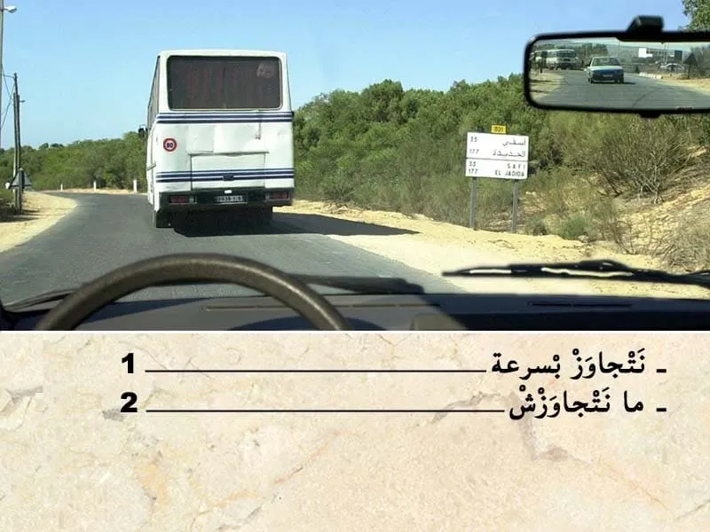
الجواب الصحيح: 2
قبل التجاوز . واجب عليا نراقب، تم نبه، تم ننحاز. في هذا الحالة كاين منعرج . و الرؤية غير واضحة بالإضافة لان السير في الإتجاهين. و بالتالي ما يمكنش لي نتجاوز الآن .
السؤال 25
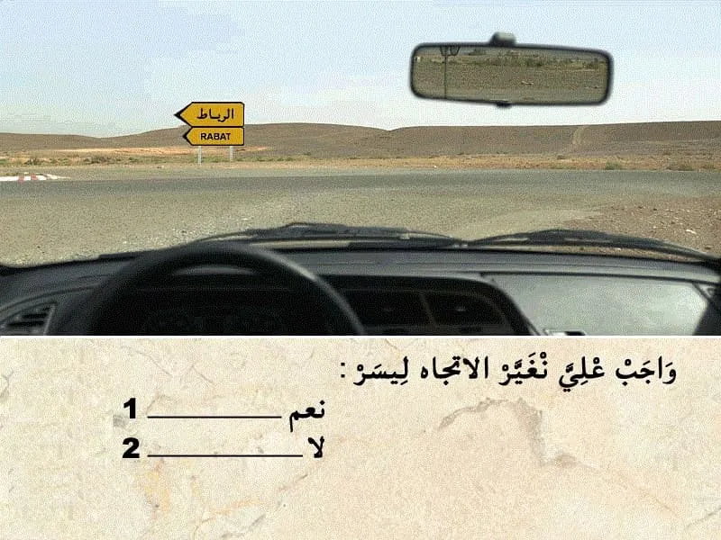
الجواب الصحيح: 2
هذا العلامة ديال الإرشاد. عبار عن سهم باللون الاصفر الى اليسار. - يعني تشوير مؤقت . مؤقتا الطريق لي كتمشي للرباط على ليسر - واش واجب عليا نغير الإتجاه على ليسر . لا . ماشي علامة ديال الاجبار باش ندور على ليسر في هذا ملتقى الطرق.